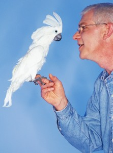

Services
Wisdom Pet Medicine is a state-of-the-art veterinary hospital, featuring the latest in diagnostic and surgical equipment, and a staff of seasoned veterinary specialists in the areas of general veterinary medicine and surgery, oncology, dermatology, orthopedics, radiology, ultrasound, and much more. We also have a 24-hour emergency clinic in the event your pet needs urgent medical care after regular business hours.
At Wisdom, we strive to be your pet’s medical experts from youth through the senior years. We build preventative health care plans for each and every one of our patients, based on breed, age, and sex, so that your pet receives the most appropriate care at crucial milestones in his or her life. Our overarching goal is to give your pet the best shot possible at a long and healthy life, by practicing simple preventative care. We even provide an online Pet Portal where you can view all your pet’s diagnostic results, treatment plans, vaccination and diagnostic schedules, prescriptions, and any other health records.